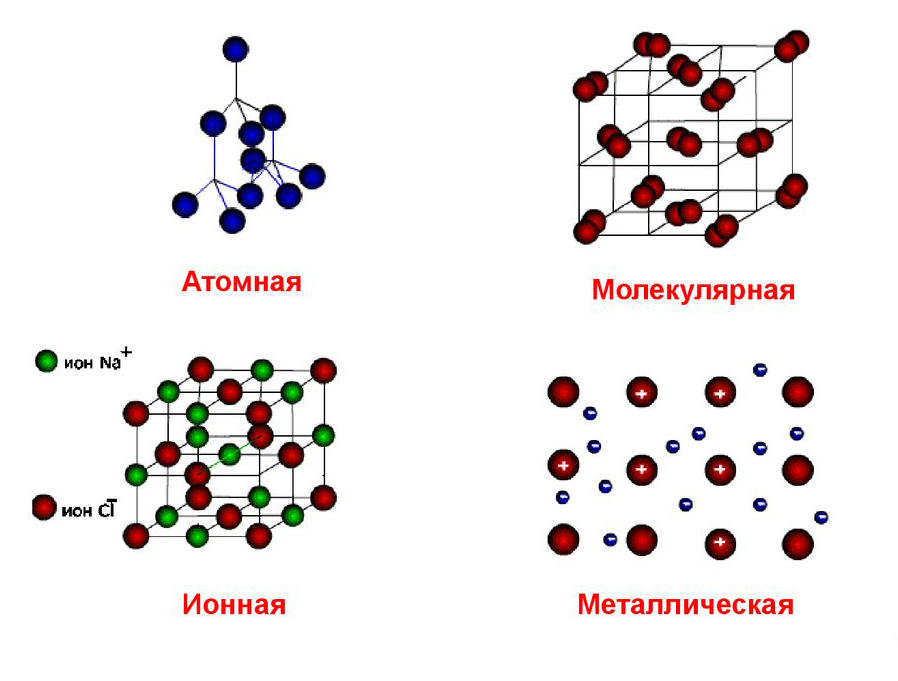

Типы кристаллических решеток
- Твёрдые вещества бывают аморфные или кристаллические. Чаще имеют кристаллическое строение.⠀
- Кристаллическое строение характеризуется правильным расположением частиц в определенных точках пространства‼️
- Точки, в которых размещены частицы — УЗЛЫ кристаллической решетки.
- В узлах решётки — АТОМЫ, ИОНЫ или МОЛЕКУЛЫ
- 4 типа кристаллических решёток:⠀ АТОМНАЯ, МЕТАЛЛИЧЕСКАЯ, ИОННАЯ, МОЛЕКУЛЯРНАЯ
- Раздел: Полезные статьи
- Дата: 22.09.2020
